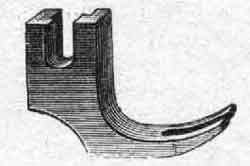
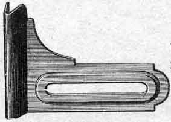

THE EXTRA NEEDLE- PLATE, which has a larger hole, is only required when using a No. 14 or ] 5 needle with 20 to 40 linen thread: never use it for any other numbers.
THE NEW EDGE-SEWER (small forked guide). FOR stitching close to an edge or to a cord or to any thickness in the work, which could not easily be done with the plain-sewing foot.
THE STRAIGHT GUIDE. THIS simple appliance is fastened by the thumb-screw to the bed-plate of the machine and serves to guide seams, very broad hems, tucks, or other folds in a straight line.
THE engraving clearly shows the threading of the needle. Having threaded the shuttle as shown on page 6, place it in its carrier with the point towards the needle. Hold the needle thread by the end, slack, turn the upper fly-wheel round once, towards you, and then draw the shuttle thread. upwards in a loop. Push both threads backwards, ready for sewing.
is the foot containing a little twisted steel spring. Turn down a couple of inches of the material as in hemming by hand. Insert enough of the folded part in the hemmer for the machine to feed. Keep the hemmer just full by turning the material over in the right, neither too much or too little of the material being supplied.
USE the foot as shown above, which is without the little steel spring. Place the two pieces of stuff (as in hemming) with the edge of the under one projecting about a quarter of an inch, and proceed as indicated by the engraving.
TO make the double seam, straighten out the work and insert, the fold in the same foot (see previous page) when it will stitch with perfect ease. This is a most useful appliance, and is a special feature of the "NAUMANN" machines.
PLACE the material to be gathered underneath the presser-foot, and put the band between the two plates of the foot as engraved. A little practice will make perfect in its use. The larger the stitches and the tighter the tension the fuller will be the folds.
Loosen the small screw at the back of holder and place round presser-bar so that the holes exactly meet the hole in presser-bar, pass the straight end of guide through the holes -- move the the right or left according to the distance required between the rows of stitching and fix the guide firmly by tightening the screw.
Stitch the first row perfectly straight to begin with, then guide the next row by the first as shewn on the engraving. Adjust the upper tension rather loosely until you get the work flat below and puffy above -- by so doing you do not need to use silk in the shuttle, a middle size stitch is the best.